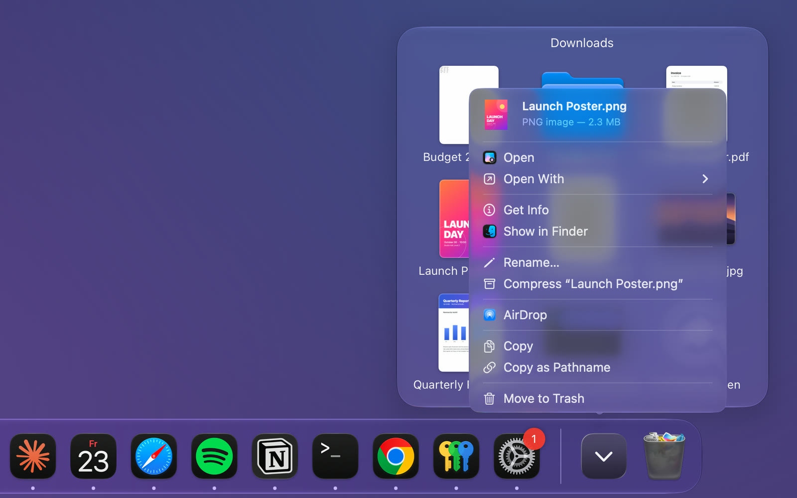

A real right-click menu for every file, folder, and Stack in your Dock. Open with, AirDrop, copy, trash. Without ever opening Finder.

Right-click any file in your Dock.
Open it with any app. No Finder detour.
AirDrop it to a nearby device.
Works inside Stacks. Jump straight to Finder.
Copy the path. Or trash it. Done.
One right-click. Every action you need. Right where your files already live.
Your preferred apps for each file type sit right at the top, followed by every system suggestion.
Send any Dock file straight to a nearby device. One click, no Finder window required.
Grab the full path as text or the file itself. Focus returns to your previous app, so paste just works.
The menu appears in Dock Stack fan and grid views too, not just on pinned items.
Delete from the Dock without dragging it to the Trash.
No Dock icon of its own. Starts at login if you want it to. Settings are a double-click away when you need them.
Buy DockClick on Setapp, then install it from the Setapp app.
On first launch, accept the license, then switch DockClick on under Privacy & Security › Accessibility. On macOS 27 this section is called Device Control and Data Access. DockClick restarts itself automatically.
That's it. The extended menu appears on any file, folder, or Stack item in your Dock.